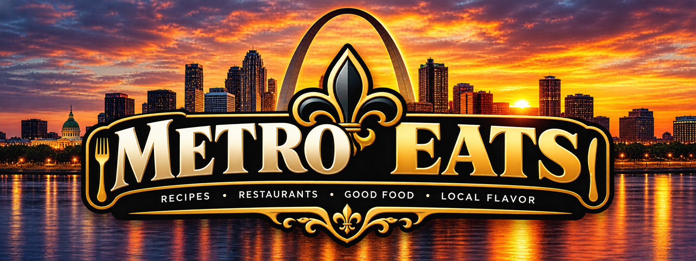

Your Collection
Saved with care
Your recipes and restaurant notes, kept together in one place.

Your personal recipe book and restaurant journal — built around the food you actually love.
Your recipes and restaurant notes, kept together in one place.
This preview reads available records only. No recipe, restaurant, or review can be changed or overwritten here.